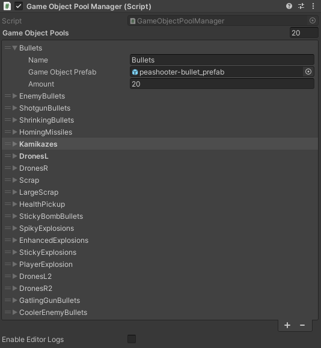
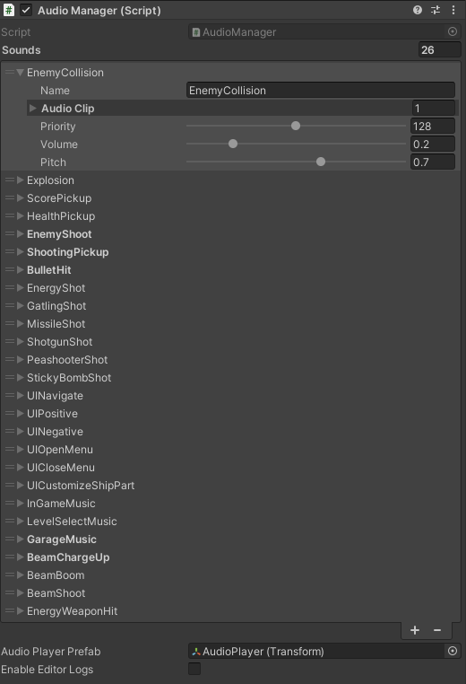
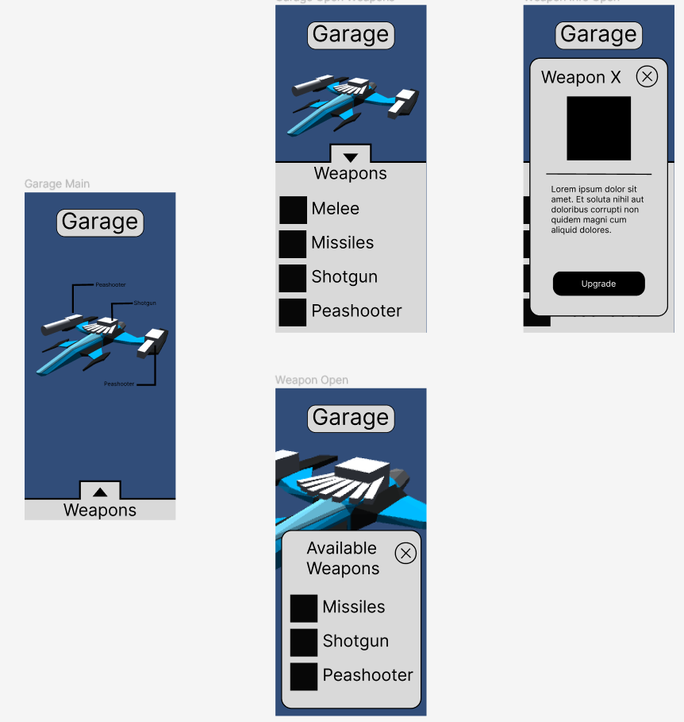

Astral Drift
Year made
- 2023
Software
- Unity3D
- Figma
Language
- C#
Project Duration
- 5 Months
Team
- 5 Developers
- 5 3D artists
Links
- No links available
Description
In the third year of my Bachelor at the AUAS I worked on Astral Drift.
Astral Drift is a mobile space themed "Shoot 'em up" with player ship customization, a multitude of different enemies and 5 hand made levels.
This project taught me many things, both about programming and about working in a (for me up until that point) large team.
What did I learn?
Deep dive
I developed the game object pooling system for the game. This system is used for pooling enemies, bullets, pickups and particle effects. By using object pooling I reduced the amount of calls to create new objects and significantly improved performance, which is crucial for mobile games.
In the game object pool manager inspector, object pools can be created by adding new game object pool to the list of managed game object pools. To do this, the list item requires a name, prefab and the amount of objects to pool (see image below).

The manager has built in enabling and disabling of debug messages and catches potential issues. For example, when a pool
is empty but a object is requested, it will double the size of the object pool, creating new objects and returns a new object.
A warning will also be given to warn the developers that increasing the original pool size is recommended.
You can find the full GameObjectPoolManager.cs script below.
using System;
using System.Collections;
using System.Collections.Generic;
using UnityEngine;
/*
Description:
This script manages all of the GameObject pools.
You can create GameObjectPools in the inspector list, set the prefab, amount, name, etc.
You can Get GameObjects from the any pool through name or reference.
Be sure to Return them to the pool after use or deactivation.
When a pool is asked for an item, but every single one is in use, it automatically doubles in size and returns a newly generated one.
To reset the pools to their original size, you can call ResetObjectPools.
*/
[System.Serializable]
public class GameObjectPool
{
[Tooltip("Name used for identifying this pool")] public string Name;
[Tooltip("GameObject Prefab to pool")] public GameObject GameObjectPrefab;
[SerializeField, Tooltip("Amount of GameObjects to pool")] private uint Amount;
[Tooltip("List of pooled GameObjects")] public Queue<GameObject> PooledGameObjects;
[HideInInspector] public List<GameObject> poolList = new List<GameObject>();
public Transform Library { get; set; } //Parent GameObject for pool items.
public uint OriginalAmount { get; set; } //Used for doubling and resetting pool.
public uint CurrentAmount { get => Amount; set => Amount = value; } //Used for doubling and resetting pool.
public GameObjectPool(string name, GameObject prefab, uint objectAmount)
{
this.Name = name;
this.GameObjectPrefab = prefab;
this.Amount = objectAmount;
}
}
public class GameObjectPoolManager : MonoBehaviour
{
[Tooltip("List of GameObject pools")] public List<GameObjectPool> gameObjectPools; //Init in Inspector
private Dictionary<string, GameObjectPool> _poolDict;
public bool enableEditorLogs = false;
private bool _editorLogs = false;
#region Singleton
public static GameObjectPoolManager Instance { get; private set; }
private void Awake()
{
if (Instance != null && Instance != this) { Destroy(this.gameObject); }
else { Instance = this; }
}
#endregion
private void Start()
{
SetOriginalAmounts();
PopulatePoolDictionary();
PopulateObjectPools();
#if UNITY_EDITOR
_editorLogs = enableEditorLogs;
#endif
}
/// <summary>
/// Sets the original pool amount.
/// </summary>
private void SetOriginalAmounts()
{
foreach (GameObjectPool pool in gameObjectPools)
{
pool.OriginalAmount = pool.CurrentAmount;
}
}
/// <summary>
/// Instantiate all pools and all pool items.
/// </summary>
private void PopulateObjectPools()
{
foreach (GameObjectPool pool in gameObjectPools)
{
pool.PooledGameObjects = new Queue<GameObject>();
GameObject library = new GameObject($"{pool.Name} Pool");
library.transform.parent = this.gameObject.transform;
pool.Library = library.transform;
for (int i = 0; i < pool.OriginalAmount; i++)
{
GameObject temp = Instantiate(pool.GameObjectPrefab, library.transform);
temp.SetActive(false);
pool.PooledGameObjects.Enqueue(temp);
pool.poolList.Add(temp);
}
}
}
/// <summary>
/// Resets all pools to the original amounts.
/// </summary>
public void ResetObjectPools()
{
for (int i = 0; i < gameObjectPools.Count; i++)
{
for (int j = 0; j < gameObjectPools[i].poolList.Count; j++)
{
GameObject item = gameObjectPools[i].poolList[j];
if (gameObjectPools[i].PooledGameObjects.Contains(item)) continue;
ReturnGameObjectToPool(gameObjectPools[i], item);
}
}
}
/// <summary>
/// Populates Dictionary of pools for getting by PoolName.
/// </summary>
private void PopulatePoolDictionary()
{
_poolDict = new Dictionary<string, GameObjectPool>();
foreach (GameObjectPool pool in gameObjectPools)
{
_poolDict.Add(pool.Name, pool);
}
}
/// <summary>
/// Returns the GameObjectPool with given PoolName.
/// </summary>
/// <param name="gameObjectPoolName">Name of pool you want to get</param>
/// <returns></returns>
public GameObjectPool GetPoolFromName(string gameObjectPoolName)
{
_poolDict.TryGetValue(gameObjectPoolName, out var gameObjectPool);
if (_editorLogs && gameObjectPool == null)
Debug.LogError($"Couldn't find pool with name: {gameObjectPoolName}");
return gameObjectPool;
}
/// <summary>
/// Returns a GameObject from given Pool.
/// </summary>
/// <param name="gameObjectPool">Pool to get the GameObject from</param>
/// <returns></returns>
public GameObject GetObjectFromPool(GameObjectPool gameObjectPool)
{
GameObject go;
try { go = gameObjectPool.PooledGameObjects.Dequeue(); }
catch
{
if (_editorLogs)
Debug.LogWarning($"Tried to get GameObject from {gameObjectPool.Name}, but pool was empty. Doubling pool size.");
DoublePoolSize(gameObjectPool);
go = gameObjectPool.PooledGameObjects.Dequeue();
}
return go;
}
/// <summary>
/// Returns a GameObject from pool with given PoolName.
/// </summary>
/// <param name="gameObjectPoolName">Name of pool to get the GameObject from</param>
/// <returns></returns>
public GameObject GetObjectFromPool(string gameObjectPoolName)
{
return GetObjectFromPool(GetPoolFromName(gameObjectPoolName));
}
/// <summary>
/// Return given GameObject to pool with given Pool.
/// </summary>
/// <param name="gameObjectPool">Pool to return GameObject to</param>
/// <param name="gameObject">GameObject to return to pool</param>
public void ReturnGameObjectToPool(GameObjectPool gameObjectPool, GameObject gameObject)
{
if (gameObject == null) return;
gameObject.SetActive(false);
gameObject.transform.parent = gameObjectPool.Library;
gameObjectPool.PooledGameObjects.Enqueue(gameObject);
}
/// <summary>
/// Return given GameObject to pool with given PoolName.
/// </summary>
/// <param name="gameObjectPoolName">Name of pool to return GameObject to</param>
/// <param name="gameObject">GameObject to return to pool</param>
public void ReturnGameObjectToPool(string gameObjectPoolName, GameObject gameObject)
{
ReturnGameObjectToPool(GetPoolFromName(gameObjectPoolName), gameObject);
}
/// <summary>
/// Doubles given pool.
/// Instantiates and adds the current amount of items in the pool, then doubles the current amount.
/// </summary>
/// <param name="gameObjectPool">Pool which you want to double</param>
private void DoublePoolSize(GameObjectPool gameObjectPool)
{
for (int i = 0; i < gameObjectPool.CurrentAmount; i++)
{
GameObject temp = Instantiate(gameObjectPool.GameObjectPrefab, gameObjectPool.Library.transform);
temp.SetActive(false);
gameObjectPool.PooledGameObjects.Enqueue(temp);
gameObjectPool.poolList.Add(temp);
if (_editorLogs)
Debug.LogWarning("Pool has been doubled, consider increasing original pool size!");
}
gameObjectPool.CurrentAmount *= 2;
}
}
I developed the audio management system for the game. This system is used for storing and playing sound effects and has built in enabling and disabling of debug messages. In the inspector developers can define the list of sound effects for the game (see image below). Each sound effect needs a name, any number of sound clips and some audio source settings.

The game object pool manager is used to create a pool of game objects, each with an audio source. When the audio manager gets a request to play
a sound it gets one of the audio clips from the defined sound effects at random, which allows for randomized sound variation and reduce
repetitive sounds, and gets a game object with an audio source from the game object pool manager, which then plays the sound clip.
This method of managing game audio can only be used in 2D mobile games, as it's not spatial audio. In 3D games with spatial audio,
audio will have to be managed differently.
You can find the full AudioManager.cs script below.
using System;
using System.Collections;
using System.Collections.Generic;
using UnityEngine;
/*
Description:
This script manages all the audio in the game.
You can create Sound items in the inspector list, set the AudioClips,
priority, volume, etc.
It works kind off like the GameObjectPoolManager.cs script,
it also needs an instance of that script to work.
The GameObjectPoolManager houses a pool of AudioPlayer GameObjects,
which are used to play sounds (this is to reduce clipping and cutting).
You can PlaySound through a name or reference.
The AudioPlayer will be automatically returned to the pool once finished playing.
You can also PlayLooped, which will keep playing until you tell it to StopLooped.
*/
[System.Serializable]
public class Sound
{
public string Name;
public AudioClip[] AudioClip;
[Range(0, 256)] public int Priority = 128;
[Range(0, 1)] public float Volume = 1;
[Range(-3, 3)] public float Pitch = 1;
}
public class AudioManager : MonoBehaviour
{
public List<Sound> sounds;
private Dictionary<string, Sound> _soundDict = new();
private List<AudioSource> loopingSounds = new();
public Transform audioPlayerPrefab;
public bool enableEditorLogs = false;
private bool _editorLogs = false;
private float volume;
private System.Random rnd;
#region Singleton
public static AudioManager Instance { get; private set; }
private void Awake()
{
if (Instance != null && Instance != this) { Destroy(this.gameObject); }
else { Instance = this; }
}
#endregion
private void Start()
{
PopulatePoolDictionary();
volume = SessionInventoryManager.Instance.Inventory.Volume.Value;
rnd = new System.Random();
#if UNITY_EDITOR
_editorLogs = enableEditorLogs;
#endif
}
private void OnEnable()
{
CreateAudioSourcePool();
}
/// <summary>
/// Create an AudioPlayer GameObjectPool.
/// </summary>
private void CreateAudioSourcePool()
{
var audioSourcePool = new GameObjectPool("AudioSources", audioPlayerPrefab.gameObject, 10);
GameObjectPoolManager.Instance.gameObjectPools.Add(audioSourcePool);
}
/// <summary>
/// Populates Dictionary of Sounds for getting by SoundName.
/// </summary>
private void PopulatePoolDictionary()
{
_soundDict = new Dictionary<string, Sound>();
foreach (Sound audioItem in sounds)
{
_soundDict.Add(audioItem.Name, audioItem);
}
}
/// <summary>
/// Play given Sound.
/// </summary>
/// <param name="sound">Sound to play</param>
public void PlaySound(Sound sound)
{
var sourceGameObject = GameObjectPoolManager.Instance.GetObjectFromPool("AudioSources");
sourceGameObject.SetActive(true);
var audioSource = sourceGameObject.GetComponent<AudioSource>();
audioSource.clip = sound.AudioClip[rnd.Next(0, sound.AudioClip.Length)];
audioSource.volume = sound.Volume * volume;
audioSource.pitch = sound.Pitch;
audioSource.priority = sound.Priority;
audioSource.loop = false;
audioSource.Play();
StartCoroutine(ReturnAudioPlayerToPool(sourceGameObject, audioSource.clip));
}
/// <summary>
/// Play Sound with given name.
/// </summary>
/// <param name="name">Name of Sound you want to play</param>
public void PlaySound(string name)
{
PlaySound(FindAudioItem(name));
}
/// <summary>
/// Play given Sound on loop until StopLooped is called.
/// </summary>
/// <param name="sound">Sound to play on loop</param>
public void PlayLooped(Sound sound)
{
var sourceGameObject = GameObjectPoolManager.Instance.GetObjectFromPool("AudioSources");
sourceGameObject.SetActive(true);
AudioSource audioSource = sourceGameObject.GetComponent<AudioSource>();
audioSource.clip = sound.AudioClip[rnd.Next(0, sound.AudioClip.Length)];
audioSource.volume = sound.Volume * volume;
audioSource.pitch = sound.Pitch;
audioSource.priority = sound.Priority;
audioSource.loop = true;
loopingSounds.Add(audioSource);
audioSource.Play();
}
/// <summary>
/// Play Sound with given name on loop until StopLooped is called.
/// </summary>
/// <param name="name">Name of sound to play on loop</param>
public void PlayLooped(string name)
{
PlayLooped(FindAudioItem(name));
}
/// <summary>
/// Stop looping given Sound.
/// </summary>
/// <param name="sound">Sound to stop looping</param>
public void StopLooped(Sound sound)
{
for(int j = loopingSounds.Count - 1; j > -1; j--)
{
if (loopingSounds[j] == null) continue;
for (int i = 0; i < sound.AudioClip.Length; i++)
{
if(loopingSounds[j].clip == sound.AudioClip[i])
{
GameObjectPoolManager.Instance.ReturnGameObjectToPool(
"AudioSources",
loopingSounds[j].gameObject
);
loopingSounds.Remove(loopingSounds[j]);
return;
}
}
}
}
/// <summary>
/// Stop looping Sound with given name.
/// </summary>
/// <param name="name">Name of Sound to stop looping</param>
public void StopLooped(string name)
{
StopLooped(FindAudioItem(name));
}
/// <summary>
/// Returns AudioPlayer GameObject to pool.
/// </summary>
/// <param name="sourceGameObject">AudioPlayer GameObject to return to pool</param>
/// <param name="currentPlayingSound">AudioClip the AudioPlayer is currently playing</param>
/// <returns></returns>
// TODO: rewrite this so it does not use an IEnumerator
private IEnumerator ReturnAudioPlayerToPool(GameObject sourceGameObject, AudioClip currentPlayingSound)
{
yield return new WaitForSeconds(currentPlayingSound.length);
GameObjectPoolManager.Instance.ReturnGameObjectToPool("AudioSources", sourceGameObject);
}
/// <summary>
/// Returns Sound with given name.
/// </summary>
/// <param name="name">Name of Sound you want</param>
/// <returns></returns>
/// <exception cref="Exception"></exception>
public Sound FindAudioItem(string name)
{
_soundDict.TryGetValue(name, out var audioItem);
if (audioItem == null) throw new Exception($"Couldn't find audio item with name: {name}");
return audioItem;
}
/// <summary>
/// Sets Volume in settings menu.
/// </summary>
/// <param name="volume">Volume between 0 and 2</param>
public void SetVolume(float volume)
{
Instance.volume = volume;
SessionInventoryManager.Instance.Inventory.Volume.Value = volume;
SessionInventoryManager.Instance.Inventory.Volume.Save();
Instance.UpdateLoopedVolume(volume);
}
/// <summary>
/// Updates the looped sound volume.
/// </summary>
/// <param name="volume">Volume between 0 and 2</param>
public void UpdateLoopedVolume(float volume)
{
for (int i = 0; i < loopingSounds.Count; i++)
{
loopingSounds[i].volume = volume * 0.5f;
}
}
}
I designed the user interface for the garage where the player can customize their spaceship. For this design I focussed on user friendliness and intuitiveness. This design was inspired by Clash Royale, as they implement similar UI elements.
Below you can see an early design for the UI made in Figma.
